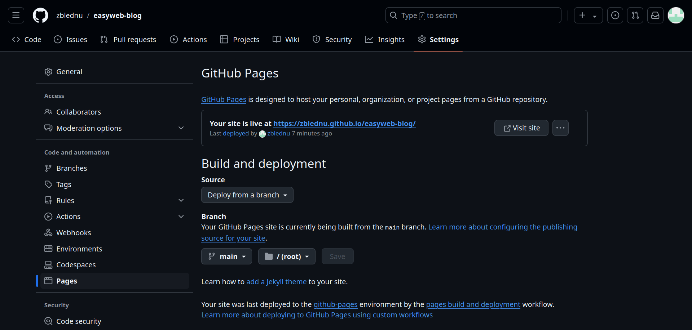

Host your website for free
Want your website to be something more than a dead-weight resting on your pc?
In this article you will configure Github Pages to host your blog.
Setting up Github account
If you don't already have one, go to https://github.com and create an account.
We need a way for your PC to identify itself to your Github. That's what SSH-keys are for.
Run the command below in your terminal:
ssh-keygen -t ed25519 -N "" -f ~/.ssh/id_ed25519 && cat ~/.ssh/id_ed25519.pub
It generates a pair of public/private keys using some fancy algorithm, places it in your user's home directory
and prints out the created public key.
Copy the last line of terminal's output (the one that starts with "ssh-ed25519"). Go to https://github.com/settings/ssh/new and paste it in the "Key" field. Name it however you like, then press "Add SSH Key".
Uploading your website to Github
Go to https://github.com/new to create a repo for your blog project.
- cd into your blog's directory and make it a git directory:
- Switch branch to main and add your entire project as the first commit:
- Set the path to your GitHub repo and upload files:
cd path-to-your-blog
git init
git branch -M main
git add .
git commit -m "initial commit"
git remote add origin ssh-path-to-your-github-repo
git push -u origin main
Configuring Github Pages
On your repository page:
- Go to repository "Settings" tab
- Scroll down to the "Pages" section
- Under "Source", select "Deploy from a branch"
- Select "main" branch and the root folder
- Click "Save"
After a short period of time (shouldn't take more than 5 minutes), your site will be live at:
https://username.github.io/repo-name
Or, simply reload the "Pages" tab and you'll see the link:

From now on, GitHub will serve the latest content in your repository, so there's no need to reconfigure it every time you make a change to your website.
Just make sure you've pushed your changes, and the file named "index.html" is present.